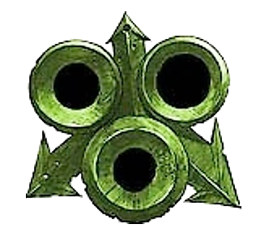

Nurgle
| Nurgle The Plague God | |
|---|---|
 The mark of Nurgle Artwork © Games Workshop | |
| Titles | Grandfather Nurgle, the Plague God, the Lord of Decay, the Father of Plagues |
| Domain | Disease, decay, death and rebirth, despair, endurance |
| Colours | Sickly green, rust and bone |
| Realm | The Garden of Nurgle, in the Realm of Chaos; the Plague Planet in the Eye of Terror |
| Symbol | Three circles joined by points; the fly; the bell |
| Rival | Slaanesh |
| Servants | |
| Greater daemons | Great Unclean Ones |
| Lesser daemons | Plaguebearers, Nurglings, Beasts of Nurgle, Plague Drones |
| Mortal champions | Typhus, Calas Typhon; Daemon Primarch Mortarion |
| Legion | Death Guard |
Nurgle, called Grandfather Nurgle, the Plague God and the Lord of Decay, is the Ruinous Power of disease, entropy and the stubborn persistence of life in the face of ruin. Imperial scholars hold that he feeds on despair and on the hope that outlives it: the dying man's last prayer, the sick child's will to see the morning and the helpless fury of a population that watches its neighbours fall. In the doctrine of his cults, Nurgle is a loving father who gives his children the gift of endurance, and all decay is a rite of rebirth. In the view of the Ordo Malleus, he is the most patient and the most corrupting of the Powers, and the one whose servants are most easily mistaken for victims.[1]
Nurgle's cults begin with sickness. A plague strikes a city, a hive or a ship, and some of those who survive are not content merely to have been spared. They speak of a gift, of a voice that comforted them as they lay dying, of a rot that is a blessing. Within weeks the sufferers have gathered in cellars and sewers, painting the Plague God's mark on the walls and offering their bodies to be changed. The Ordo Hereticus has called Nurgle's cults the hardest to eradicate, since those who join them are often already condemned, and the disease they carry spreads faster than the Inquisition can respond.[2]
His mortal servants are led by the Death Guard, the XIV Legion, whose primarch Mortarion became a Daemon Prince of Nurgle in the aftermath of the Heresy. The Legion's warriors, bloated by the Plague God's gifts and clad in corroded armour, are the most durable of the Heretic Astartes. In the Era Indomitus the Death Guard and Nurgle's daemons have taken a prominent place in the war on the southern reaches of the Ultima Segmentum, where they have captured whole systems.[3]
Nature and domain
[edit]The Plague God
[edit]The aspect of Nurgle is despair, but the Ordo Malleus is careful to point out that this is not a simple matter. Despair as the Powers feed on it is not mere sorrow. It is the knowledge that all things end, joined with the stubbornness that carries on regardless. Nurgle is nourished by both: by the death of the sick and by the defiance of the dying. His cultists see this as a mystery. To them, decay is not an enemy but a stage in a cycle, and the cycle is sacred. A body that rots feeds the soil, the soil feeds new life, and the Plague God stands at every stage.[1]
The cheer of Nurgle's servants is one of the more disturbing facts recorded about them. The daemons sing, joke and tell tall tales as they spread disease, and the cultists are often described as the most good-humoured of the Chaos worshippers. The Inquisition has found that the cheerfulness is genuine, and that it springs from the cultists' conviction that they are loved. This is the Plague God's lure: he offers comfort to those the Imperium has abandoned.[2]
The Garden
[edit]Nurgle's realm in the Warp is the Garden of Nurgle, a vast, overgrown domain of swamps, rotting orchards and manor houses, where each plague that has ever struck is cultivated like a flower. Its centre is the Mansion of the Plague Lord, where Nurgle is said to dwell. In the Garden the daemons tend the diseases with the pride of gardeners, and the Plaguebearers count the plagues aloud in a recitation that never ends. Those who have seen the Garden and returned describe its beauty with horror: the colours are rich, the air is warm, and everything in it is alive and decaying at once.[1]

Daemons
[edit]Plaguebearers and Nurglings
[edit]The common troops of Nurgle's host are the Plaguebearers, one-eyed, bloated daemons with swollen bellies and rotting flesh. They are slow and difficult to kill, since each wound they take only adds another sore to their bodies, and the disease they carry is passed to all who touch them. They advance in rank and file, each counting the plagues of the Garden in a rhythmic chant. Smaller daemons, the Nurglings, accompany them: mischievous, giggling imps that climb across the bodies of the fallen and swarm in great numbers. Many of the Imperium's soldiers who have fought Nurgle's daemons remember the Nurglings' laughter more clearly than anything else.[4]
Great Unclean Ones and others
[edit]The greatest of Nurgle's daemons are the Great Unclean Ones, vast, bloated creatures whose bodies are a mass of sores, with mouths that vomit pestilence and weapons that spread plague. The Great Unclean Ones are Nurgle's generals and priests, and each is a kind of walking disease. The Imperium has recorded a small number of them by name, among them Ku'gath Plaguefather, a daemon of obscure origin who is said to have created dozens of the Warp's diseases. Other servants include the Beasts of Nurgle, slug-like pets that leave trails of slime and whose affection is deadly, and the Plague Drones, huge flies that carry daemons into battle.[1]

Worshippers
[edit]Cults and plagues
[edit]Nurgle's cults are most often found in places where disease is common: the lower hives, the refugee camps, the hospices of war zones, the death worlds. They have a typical shape. A plague appears, often unexplained, and kills many. A few who survive speak of a dream in which a kind, smiling figure offered them a place at his table. The survivors gather, spread the disease on purpose, and in the process take the first steps toward mutation. A cult that has progressed to its second stage carries diseases that are lethal to anyone else but harmless to its members, and its leaders may command a pestilence that no Imperial medicae has ever seen.[2]
The Plague God's gifts include a resilience that his Marines regard as divine. Heretic Astartes of Nurgle are so swollen with disease that they can no longer feel pain, and their bodies are almost impossible to kill by normal means. They fight by advancing steadily, absorbing blows that would stop other soldiers. The sickness they carry is a weapon in its own right, since the gas and mist that surrounds them infects those who breathe it.[5]
The Death Guard
[edit]The Death Guard was the XIV Legion of the Great Crusade, raised on the toxic world of Barbarus under sorcerer-tyrants who ruled it by terror. Its primarch, Mortarion, was a grim and stoic commander who had grown up beneath a poisoned sky, and his Legion was known for its stubborn endurance and its habit of fighting on when other Legions broke. The Death Guard sided with the Warmaster in 005.M31 and took part in the atrocity at Isstvan III. Imperial records agree that Mortarion resented the favour shown to others, and that his bitterness was a weakness that Nurgle used.[6]
On the way to Terra, Mortarion's fleet was trapped in the Warp by a ritual of the Warmaster's agents. For a long period of Warp-time the Legion was held in the domain of the Plague God, where its warriors were sickened and nearly destroyed. At the end of his endurance, Mortarion gave himself and the Legion to Nurgle in exchange for an end to the pain, and the Legion emerged transformed. The Death Guard attacked Terra as the first of the Traitor Legions to assault the Palace's outer walls, and after the Siege they retired to the Eye of Terror. Mortarion became a Daemon Prince and took a plague-wracked world as his domain. In later centuries the Death Guard sallied through the Cadian Gate to spread the diseases of the Plague God across the galaxy.[6]
Typhus and the Traveller
[edit]One of the Death Guard's captains, Calas Typhon, took a different path. He was the first captain of the Legion and its Destroyer Lord, and his ship, the Terminus Est, became the centre of a cult of its own. After the Heresy he rose as the Herald of Nurgle, called Typhus the Traveller, and took the ship across the galaxy at the head of a fleet of plague-infested hulks. He is regarded by the Imperium as the most dangerous of Nurgle's mortal champions, and several of the great outbreaks of the thirty-ninth and fortieth millennia are traced to his ship's passage. He is also linked to the Destroyer Hive, a space hulk infected with a virulent plague.[4]
History
[edit]Origins
[edit]The Imperium knows little of Nurgle's origin. Aeldari accounts, which the Ordo Xenos regards as unreliable, hold that he took shape from the sorrow of dying species long before mankind, and that he grew as the mortal races of the galaxy multiplied and met plague and famine. His appearance in human records is as old as the species' first diseases. The Mechanicus keeps fragments of a hymn to "the Father of Flies", dated to the Dark Age of Technology, which are the earliest known written trace of his cult.[1]
The Heresy and the long war
[edit]The Plague God's power in the material universe was little recognised before the Heresy. In the years of the war, his strength grew in the Death Guard and in the worlds they conquered. His daemons appeared at the Siege of Terra, where Mortarion's Legion was given the first assault on the Palace's outer walls. It is recorded in the annals of the Imperial Fists that the Death Guard assault was the first to bring the defenders to despair, for the warriors who attacked were not killed by the weapons that cut down their brothers.[7]
After the Heresy, Nurgle's Legion withdrew to the Eye of Terror, and Mortarion made a world there his own. In the following ten thousand years the Death Guard played a modest role in the Black Crusades, preferring to spread plagues across the galaxy by stealth. Outbreaks attributed to Nurgle's agents are recorded in every segmentum, among them several on Armageddon and in the Gothic Sector. The Inquisition has found that Nurgle works slowly and takes the long view, a fact that sets him apart from the more volatile Powers.[4]
The Plague Wars
[edit]The opening of the Cicatrix Maledictum in 999.M41 was a gift to the Plague God. Nurgle's strength grew in the southern reaches of the Ultima Segmentum, where the three systems known as the Scourge Stars fell to his servants. From this base Mortarion, returned from the Eye of Terror, led the Death Guard and the daemonic Plague Legions against the Realm of Ultramar in the war that Imperial historians call the Plague Wars. He fought the Lord Commander Roboute Guilliman in person at Iax. The Imperial forces held, though Ultramar suffered grievous losses, and the war is regarded by the Lord Commander's war-council as the first campaign of the Era Indomitus in which Chaos was met in open battle and checked.[3]
Relations with other Powers
[edit]Nurgle's chief rival is Slaanesh. The two Powers represent opposite ends of the same human experience: Nurgle's servants endure, Slaanesh's indulge. Their followers regard each other with contempt, and the war between them has been recorded in the conduct of the Death Guard and the Emperor's Children. Nurgle is also at odds with Tzeentch, whose dislike of the Plague God's slowness is reciprocated. The success of the Death Guard in the Scourge Stars is held to have caused Tzeentch's jealousy, and the Thousand Sons' invasion of the Stygius Sector is described in the sealed archives as a reply.[1]
Nurgle's relations with Khorne are the least hostile of his dealings with the other Powers. The two have been known to co-operate in the Warp, since the Blood God has little patience for plots and the Plague God little interest in them. The Imperium has no record of a formal alliance.[5]
Imperial response
[edit]The Imperium's response to Nurgle's plagues is the quarantine and, in the last resort, the cleansing fire. The Adeptus Mechanicus and the Officio Medicae maintain protocols for dealing with Warp-born disease, and the Inquisition has authority to order Exterminatus on any world where the plague is found to have a daemonic source. The Imperial Cult teaches that the faithful are protected by the Emperor's light, and its priests are often the first to enter plague zones. Space Marine Chapters that have fought the Death Guard record that their gene-seed gives some protection against Nurgle's diseases, but not against the greater plagues that the Plague God's champions can unleash.[8]
Timeline
[edit]| Date | Event |
|---|---|
| Age of Strife | The Plague God's worship grows among the mortal cults of the Age of Strife.[a] |
| 005.M31 | The Death Guard turn traitor at Isstvan III under Mortarion. |
| 013–014.M31 | The Siege of Terra: the Death Guard assault the Imperial Palace in the final battle for Terra. |
| c. 300–310.M36 | The Plague of Unbelief is unleashed in the name of Nurgle, and the Apostate Cardinal Bucharis leads his crusade toward Terra.[b] |
| 000–012.M42 | The Plague Wars strike Ultramar as Mortarion invades the region. |
| 012.M42 | Roboute Guilliman returns from the Indomitus Crusade and drives Mortarion from Iax, ending the Plague Wars. |
| Early M42 | The Plague God's forces continue to strike the Imperium, and the Death Guard fight on in the Eye of Terror. |
See also
[edit]Notes
[edit]References
[edit]- ^ a b c d e f Warhammer 40,000: Core Book (9th Edition), pp. 37-38. Games Workshop. Haley, Guy. Godblight (novel). Black Library, Ch. 16.
- ^ a b c Wraight, Chris. Blood of Asaheim (novel). Black Library. Codex: Chaos Daemons (8th Edition), pp. 18-21. Games Workshop.
- ^ a b Codex Heretic Astartes - Death Guard (8th Edition), pg. 17. Games Workshop. Swallow, James. Flight of the Eisenstein (novel). Black Library.
- ^ a b c McNeill, Graham. False Gods (novel). Black Library. Lyons, Steve. Down Amongst the Dead Men (novella). Black Library.
- ^ a b Dunn, C.Z.. Hive of the Dead (novella). Black Library. Mann, George. The Unkindness of Ravens (novella). Black Library.
- ^ a b Mann, George. Labyrinth of Sorrows (Audio Book). Black Library. Codex: Chaos Daemons (6th Edition), pp. 14-15, 46-52, 61-65, 74, 78, 83, 91-92, 96-100. Games Workshop.
- ^ Cadian Blood (novella), Aaron Dembski-Bowden. Codex: Chaos Daemons (4th Edition), pp. 13, 30, 34, 38, 42, 48, 52, 59, 64, 69, 75-76, 78-85. Games Workshop.
- ^ Warhammer 40,000: Rulebook (6th Edition). Games Workshop. Codex: Eye of Terror (3rd Edition), pp. 9, 17. Games Workshop.
Further reading
[edit]- Liber Daemonica (rev. M38). Ordo Malleus. The chapter on the Plague God and his host. Restricted.
- Liber Primarchus (M32, revised M41). The entry on the XIV Legion.
- Records of the Indomitus Crusade (ongoing). Dispatches from the Plague Wars.